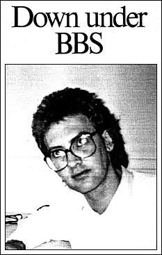

|
The
Down Under BBS started with a dream in 1978 - in fact it was a
Dream 6800 kit computer, built by Greg Hudson when he was 24
years old.
"It had a
massive 1 K memory," he recalls. "All programming had
to be done in hex and there was no external storage. So when you
switched it off you had to be ready to program it again."
Now, users of the Down Under BBS know that each time they log on
they might find a new feature carefully written into the
program. The main menu often offers a surprise.
"I decided
to start the BBS on August 4, 1985 for the public benefit,"
Hudson says. "I chose the name, Down Under, because I was
selling software in the US and wanted a distinctively Australian
name". The software was Star Trek Adventure, a text
file adventure game with fine graphics, written by him
originally for the TRS 80. It was adapted first for the Peach
computer and at $15 is a bargain for the IBM PC and compatibles.
In less than a
year the Down Under BBS has attracted between 40 and 50 users
each day, with a few more at weekends. There are around 360
regular users and over 600 irregular users. Only 13 women use
the board. Most people spend between 20 to 30 minutes on the
BBS. If you do not manage to log on at your first call, keep
dialling!
Hudson has added
15K of source code to the original 35K program running the Down
Under code to the original BBS to support a host of original
features. The improved program has been turned into a standard
ASCII BASIC file, which is still under 30K for the whole BBS
because it is compiled. In the downloadable files area,
selective directories are available including Communication,
Finance, Games, Music, Newfiles, Pictures, Unprotection and
Utility categories.
The
board is used to promote products which Down Under Software has
for sale, plus special monthly deals.
The main users are
businessmen and students from the Royal Melbourne Institute of
Technology. Asked to predict developments in BBS here in the
next two years, Hudson is not modest. "They'll just have to
keep up to me," he says. "I'm in the process of
writing a multi-user interface with the Down Under BBS. It will
have an interactive chat mode. I believe that is not available
on any other BBS in Australia at the moment."
When this feature
is added, three people at a time (two external users and the
sysop using a local console) will be able to use it. However,
Hudson is planning to expand it with 10 Telecom lines.
|
 |
|

Sysop:
Greg Hudson
Phone number: (03) 429 5819
or 429 8079
(2400 baud only)
Hours of operation: 24 hours
Baud rates: 300, 1200/75, 2400
Protocol: 8 data bits, 1 stop bit,
no parity (all
modes).
Access: Free. (Users can make a
voluntary $10
contribution.
Correct names and suburbs are
required)
Time limit: No daily limit but 60 minute
maximum per call.
Files for downloading:
Around
250, all for IBM PC and com patibles.
Another 15M of software now on floppy disks
is to be progressively added to the hard disk as
it is evaluated.
Comments: Devoted Sysop ensures that the
appearance of this BBS often changing in subtle
ways. Top Ten users listing could be a definitive
guide to some BBS fanatics. Messages
are a good mix of technical, personal, humorous
and 'neighbours over the back fence'. Useful
utilities always appearing among downloadable
files. Very
busy board.
. |
Down Under BBS
runs on a PC clone which sports 640K, two serial ports, parallel
and joystick ports, clock/calendar, a DTC hard disk controller,
two outputs to run color and monochrome monitors simultaneously,
two Chinon 360K floppy disk drives and a 22M Tandon hard disk. A
NetComm 2123 SmartModem logs callers in at 300 baud and 1200/75
and another NetComm SmartModem 1234 connects at 300, 1200/75 and
2400 baud.
Recent figures
show that a surprising 51 per cent of calls come in at 1200/75
and 49 per cent at 300 baud. (This was before the 2400 baud
access became available). Down Under BBS has probably become so
popular because it is continually evolving. Like a Vegemite
sandwich, it is distinctly Australian, and very addictive.
Robin Howells is a prolific
PC communicator who can be contacted on the Down Under BBS |